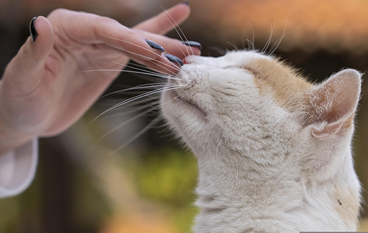

Featured Study

Photo Credit: Pixabay
Can Cat Companionship Reduce Loneliness?
By Sanderson et al., 2024 - The Journals of Gerontology: Series B
This study explored whether fostering a shelter cat could improve loneliness and well-being in older adults living alone. Results showed that loneliness significantly improved after four months, suggesting that cat companionship may offer meaningful emotional support for older adults.